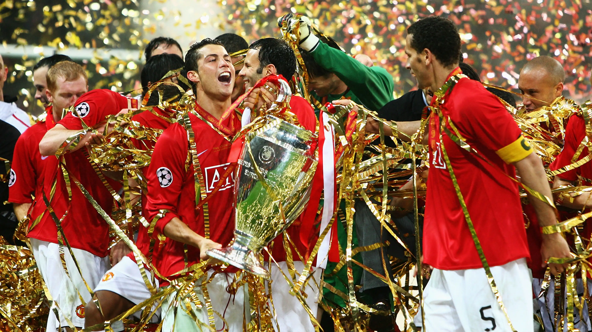
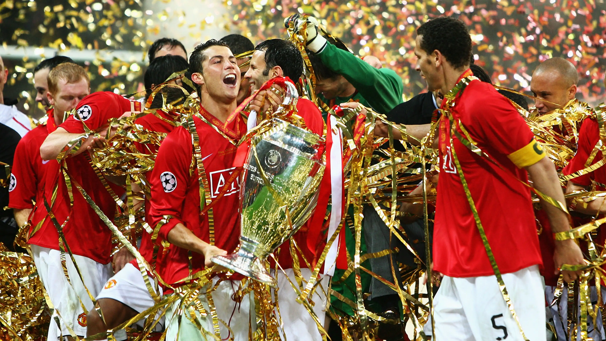

Campeones de la Champions
La UEFA Champions League es el torneo de clubes de fútbol más prestigioso de Europa. En ella se concentran los mejores equipos en busca de la copa de los campeones, la histórica Copa de Europa. Actualmente, hay un solo rey que se encuentra en solitario en la cima de campeones, el Real Madrid de España, que en 2022 consiguió su copa número 14.


 

El Manchester City se impuso al Inter en la final de la Champions disputada en Estambul. El gol de Rodri les da la primera Orejona a los cityzens. Los futbolistas que entrena Pep Guardiola escriben su nombre en la historia de la máxima competición continental. Con un entorchado en sus vitrinas se unen a Celtic, Hamburgo, Steaua de Bucarest, Olympique de Marsella, Borussia Dortmund, Feyenoord, Aston Villa, PSV y Estrella Roja . Y desde este sábado miran de cerca las dos de Oporto, Nottingham Forest, Chelsea, Benfica, y Juventus.
El equipo de Carlo Ancelotti, casi que contra todo pronóstico en cada fase que le tocó enfrentar, incluso la final donde las casas de apuestas señalaban a Liverpool como el equipo con mayores probabilidades de consagrarse campeón, terminó levantando una vez más la orejona.

Liverpool es uno de los clubes más importantes del mundo y esa chapa la ha logrado a partir de sus grandes actuaciones en la Champions League. Los ingleses han sabido irse en andas y con las manos llenas, aunque también han sufrido grandes decepciones.